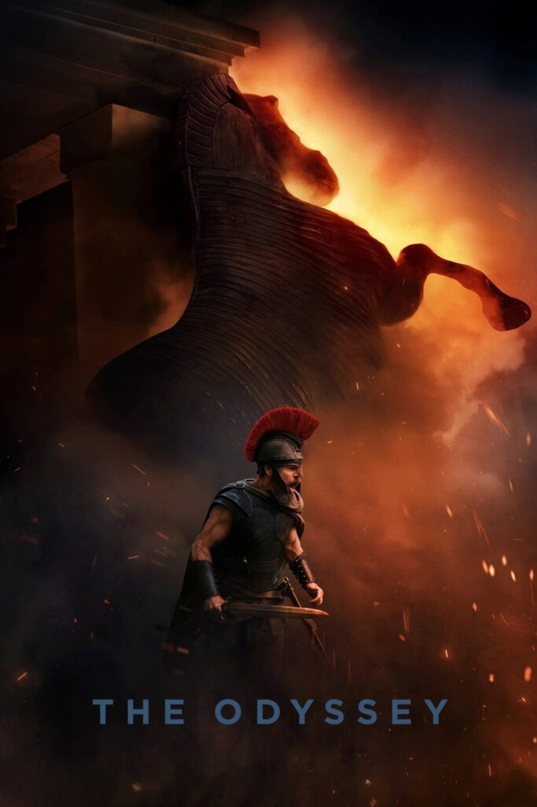
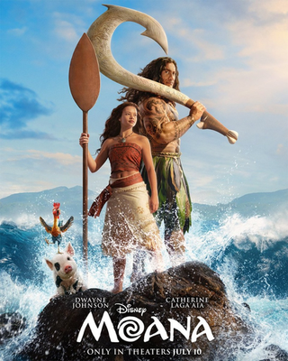
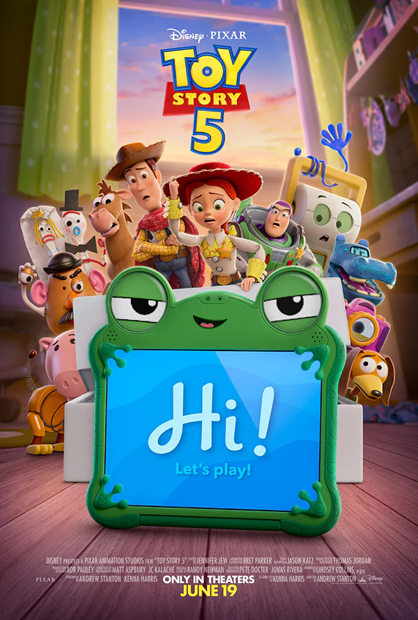
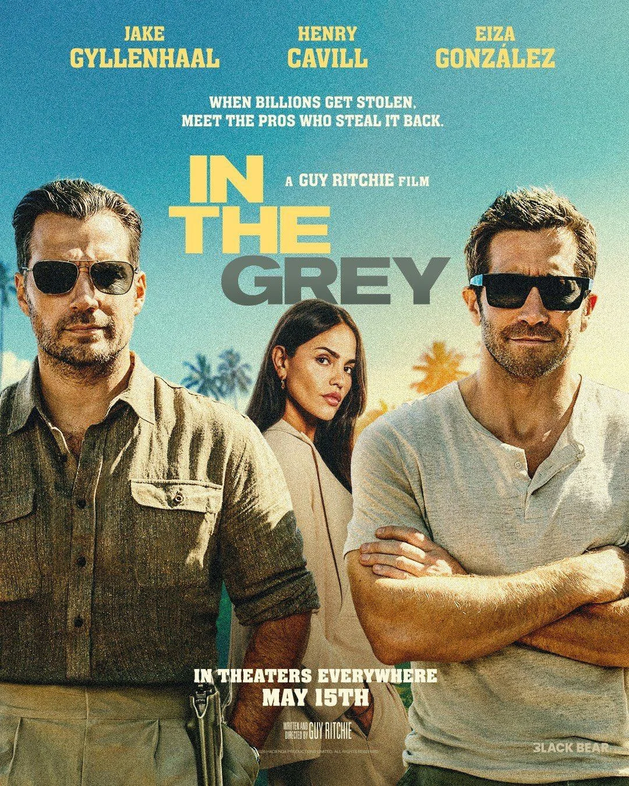
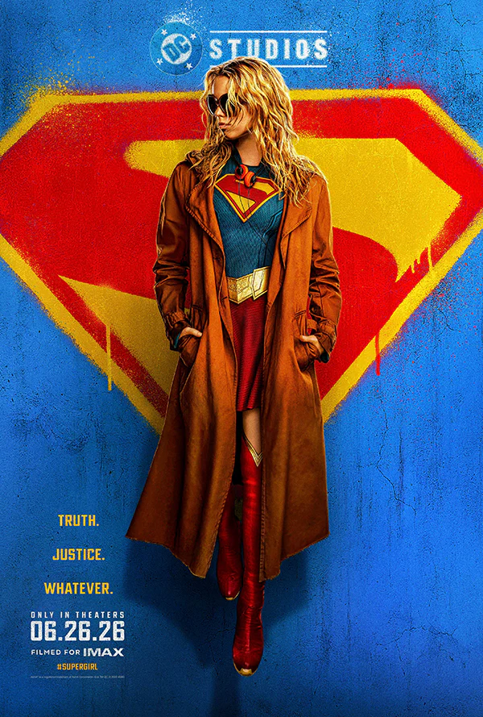

Movie reviews and film commentary for summer releases
Spider-man: Brand New Day
Directed by Destin Daniel Cretton
Score by Michael Giacchino
Photography by Brett Pawlak
Edited by Nat Sanders, Gina Sansom, and Harry Yoon
Shot on IMAX, Panavision
Panavision Panaspeed lenses
Runtime 145 minutes
Rated PG-13 for violence and some language
Spider-man: Brand New Day is a pretty decent superhero movie. Not incredible, but better than the average slop that's been coming from the Marvel Cinematic Universe recently.
The movie follows Peter Parker (Tom Holland) as he wrestles with being alone in the fourth installment of the MCU's Spider-man.
Aside from the previously Spider-man movies, not much additional exposition is needed, though you may not recognize one or two characters if you haven't seen recent MCU movies.
The film features some unique shots not seen in a Spider-man film before, and also a few seemingly purposeful throwback shots from previous installments.
It did not feel like their was too much nostalgia-bait, and that the movie does contain a good amount of substance of it's own. If you like Spider-man, you will enjoy this film.

The Odyssey
Directed by Christopher Nolan
Score by Ludwig Göransson
Photography by Hoyte van Hoytema
Edited by Jennifer Lame
Shot on IMAX Keighley
Modified Panavision Primo-65 lenses
Runtime 173 minutes
Rated R for violence and some language
Nolan's The Odyssey is an entertaining telling of Homer's story in Nolan's classic non-linear storytelling fashion. While I was originally concerned with casting choices, the overall film is well put together.
It is a heroic adventure that will be familiar to anyone who has read the story of The Odyssey previously.
One of my largest qualms with the film (aside from the poor casting choices), is the use of modern english instead of a more archaic form. This sometimes feels distracting and takes me out of the emersion of the story.
I would have enjoyed more classical voice lines instead of the modern slang used. The score is great, the story is has points to apply to real life, and there is unique cinematography used.
Nolan's use of the IMAX camera is an impressive choice and is done well.
The film could have been great. But it is still a good fun adventure movie.

Moana (2026)
Directed by Thomas Kail
Score by Opetaia Foa'i, Mark Mancina, and Lin-Manuel Miranda
Photography by Oscar Faura
Edited by Melanie Oliver
Shot on Arri Alexa 65 and Red V-Raptor
Panavision Primo-65 lenses
Runtime 115 minutes
Rated PG for action/peril, some scary images, and rude brief thematic elements
I question why this film was made. The animated Moana was released in 2016, not too long ago.
Was there a need for a live action adaptation? The animated film is better in every way and I see no point to watch this film.
The acting, wardrobe, cinematography are all sub-par. The story is fine, but just watch the original instead and you'll enjoy it much more.

Toy Story 5
Directed by McKenna Harris and Andrew Stanton
Score by Randy Newman
Photography by Matt Aspbury and Jean-Claude Kalache
Edited by Jennifer Neysa Jew
Runtime: 102 minutes
Rated: PG for some thematic elements and rude humor
A pleasant surprise, "Toy Story 5" delivers a good story that is void of the common Disney slop.
The animation felt a little off compared to the rest of the Toy Story franchise, but still impressive.
The film had some fun moments and tender moments too. It felt void of any cringeworthy propaganda.
Very appropriate and relevant theming for children growing up with technology today. A great family movie for the summer.

In The Grey
Directed by Guy Ritchie
Score by Christopher Benstead
Photography by Ed Wild
Edited by Martin Walsh and Jim Weedon
Shot on Sony Venice
Runtime: 98 minutes
Rated: R for violence, language, and sexual references
Guy Ritchie's "In The Grey" is fine. Not really good, but not terrible either. If you want a fun heist turned shoot'em up adventure, with not too much thinking required, you will probably enjoy this movie.
The cinematography was fun, with some setup scenes using text overlays and a few unique camera angles. The relationship between Henry Cavill and Jake Gyllenhaal's characters is confusing.
Supposedly they are a gay couple, with subtle references throughout the film and nothing explicit. This fact contributes nothing to the story, feeling forced in and not believable.
The two characters could have simply been close friends or brothers, and the story would be the same. Their relationship or past is not explained deeply.
The story ultimately follows Eiza González, who does a good job as the female lead.
Overall, the movie has some fun action sequences but doesn't hold together super well as one coherent big picture.
I feel that some more story development and stunts/combat would have really made the film feel more complete.
Some audiences may enjoy the film, but may not be worth the trip to the box office.

Supergirl
Directed by Craig Gillespie
Score by Claudia Sarne
Photography by Rob Hardy
Edited by Fred Raskin and Tatiana S. Riegel
Shot on Sony Venice II
Panavision Ultra Panatar II
Runtime: 108 minutes
Rated: PG-13 for sequences of strong violence, action, language, and smoking
Truth, Justice, Whatever? Two thirds of this films tagline don't show up, that is themes of truth and justice are rarely seen, whereas "whatever" could summarize the plot.
Craig Gillespie's "Supergirl" follows Kara Zor-El (played by Millie Alcock) as she teams up with Ruthye (played by Eve Ridley) to locate and defeat some alien bad guys.
The plot feels less like a complete structured story and more like a series of events that just happen to unfold one after the other.
The cinematography is fine, nothing really special or unique except for some sequences of color lighting effects, fairly typical for the modern super hero movie.
There is little virtue or character developement on display throughtout the film. No discernable deep theming or lessons learned.
Supergirl feels as though its target audience is middle school girls, who I think would quite enjoy the film. However I am unsure if there is enough interest in this audience for the film to turn a profit.